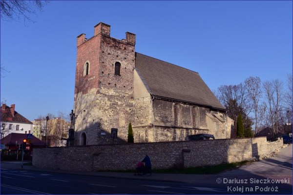

Po zobaczeniu Willi Caro wracamy ulicą Zwycięstwa na dworzec kolejowy. Przed dworcem umieszczono plan miasta z zaznaczonymi najważniejszymi zabytkami. Zaznaczono na nim między innymi kościół św. Bartłomieja w Gliwicach. Ale uwaga – niedaleko siebie są dwa kościoły św. Bartłomieja – stary i nowy. Jeśli nie macie smartfona, należy zapamiętać drogę z planu. Przejściem podziemnym przechodzimy na drugą stronę torów – wychodząc z tunelu pod torami należy wyjść z prawej strony, wychodząc po lewej zobaczymy brzydkie garaże i nieprzyjemne towarzystwo. Do kościoła św. Bartłomieja idzie się około 10 minut, o ile dobrze zapamiętaliście drogę. Stary kościół św. Bartłomieja w Gliwicach to jeden z najstarszych kościołów na Górnym Śląsku. Dziś to kościół z kamienia i cegły. Pierwszy, drewniany kościół w tym miejscu został zbudowany już w 1232 roku. Budowa kościoła ceglanego miała miejsce w XV wieku a około 1526 roku nastąpiła kolejna przebudowa. Z daleka świątynia wygląda niepozornie, a przez brzydkie reklamy na sąsiedniej posesji można go przeoczyć.